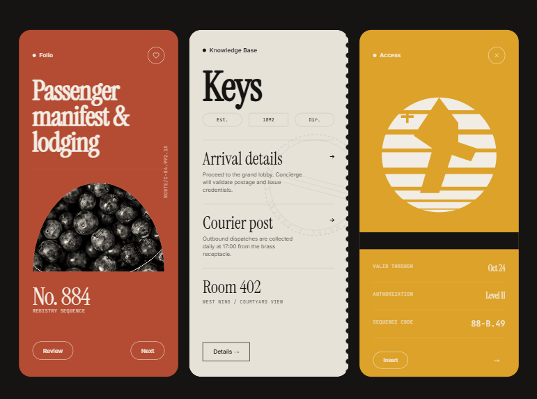
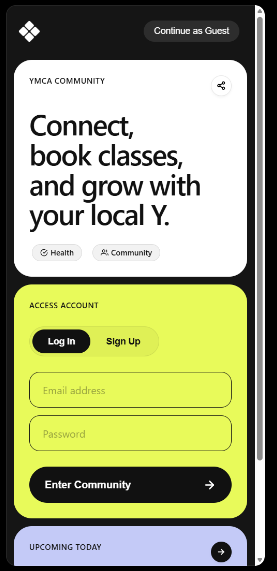
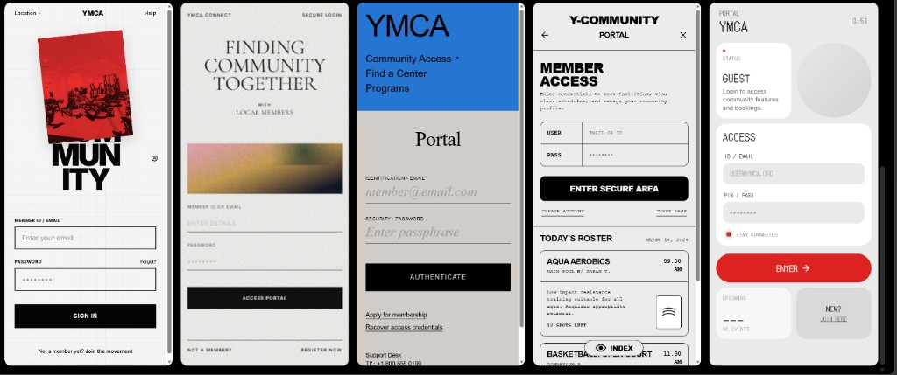

Place before profile
The Woodland Cafe and Leavesden anchor every flow. Users see the physical space first — who is there, what is happening — before being asked to identify themselves.
How we arrived at a community sub-brand that reduces the emotional cost of showing up. This page documents the design arc from research and moodboarding through wireframes, token definition, and the final interactive prototype.
01 — Research insight
Interviews and desk research across three counties revealed a consistent pattern: young people aged 14-25 knew YMCA existed, but could not picture themselves arriving. Awareness was high; attendance intent was low. The gap was not a UX bug — it was a branding and tone problem. OULM exists to close that gap by making arrival feel physically grounded, socially safe, and incrementally rewarding.
02 — Moodboard & references
We studied three design directions before converging on the warm, editorial, tactile aesthetic that defines OULM. Each reference board captured a different tension: institutional trust vs. youth energy, digital utility vs. physical place, and minimal modernism vs. lived-in warmth.

Folio / Keys / Access — editorial warmth
Dark backgrounds with warm copper and cream type. Physical objects (fruit, compass) ground the digital interface in tactile reality. This board set the tone for OULM's colour palette: bronze on dark, serif kickers, and a passport-like access metaphor.

YMCA neon — energy + access panel
A high-contrast exploration: neon yellow over soft off-white, with a full-bleed login card. We pulled the "community first, credentials second" sequencing from this direction — the access panel sits below the value proposition, not above it.

YMCA portal audit — five login patterns
Benchmarking existing and reimagined YMCA access screens. The rightmost card (minimal, mono-spaced, red accent) informed our decision to use JetBrains Mono for system labels and a simple code-handshake over complex form flows.
03 — Design principles
The Woodland Cafe and Leavesden anchor every flow. Users see the physical space first — who is there, what is happening — before being asked to identify themselves.
Booking, hosting, and access all use intentional friction: draft states, mentor review, handshake verification. Every gate exists to protect the room, not punish the user.
The app is a key, not a door. Save intent on your device; bring it to the Cafe when ready. Service Worker + IndexedDB ensure nothing is lost between visits.
Serif headlines, bronze tones, surface noise, and ambient motion create warmth. The aesthetic says "lived in" rather than "startup launch page."
04 — Visual language
Every colour, radius, shadow, and spacing value is driven by CSS custom properties defined in tokens.css. The palette is deliberately warm — parchment papers, bronze accents, sage greens, and a deep espresso dark mode.
Heading — Bebas Neue
A softer way to show up.
Display — Plus Jakarta Sans
Place before profile, friction as care.
Body — Inter
The primary barrier is not technical friction. It is the psychological anxiety of showing up for the first time, not knowing who will be there, and wondering whether you belong.
Mono — JetBrains Mono
HANDSHAKE CODE · OULM-WOODLAND · REGISTRY SEQUENCE 88-B.49
05 — Key decisions
Why a sub-brand instead of reskinning YMCA?
YMCA's brand recognition is high, but the tone feels institutional to 14-25s. OULM operates as a warm front-door that still resolves to YMCA infrastructure underneath. The lockup is always visible.
Why handshake codes instead of OAuth?
A mentor typing a code in the room is a social contract. OAuth solves identity; it does not solve belonging. The handshake forces a real conversation before digital access escalates.
Why offline-first for a community app?
Rural Hertfordshire and parts of Bedfordshire have patchy signal. An offline-first PWA with IndexedDB sync means an RSVP saved on the bus still arrives at the Cafe.
Why intentional friction in booking?
Instant-publish events create ghost listings. Draft → Pending → Approved ensures the host has thought about space, safety, access, and what they are asking people to show up for.
Why Bebas Neue for headlines?
Bebas is bold enough to hold attention inside a phone-sized viewport, but its all-caps softness avoids the aggression of geometric sans. It reads as "poster on a cafe wall," not "corporate rebrand."
Why no dark mode toggle?
The Calibrator / index page is already dark, and the device-frame preview sits on a dark stage. Adding a full dark toggle would double the token surface for a prototype that needs to demonstrate tone, not themeing flexibility.
06 — Sitemap & wireframes
Each lane traces a primary user journey. Frames show structural intent — layout primitives and content hierarchy — before visual design. Annotations mark where gating, friction, and offline storage intersect the flow.
five-tab architecture
Hero + HQ module + pillar nav + featured carousel
Filter bar + card list, county/vibe facets
Leaflet + venue sheet + filter pills
Gated: handshake required. Friction principles + approval flow
Radials + signals + handshake form + PWA bridge
Cover hue, vibe tag, attendance bar
Hero card + expandable panels: host / schedule / venue / format
Intent toggle, guest count, arrival note. Stored in localStorage
Name + age band + interest picks → suggestion engine
Post-RSVP: "users like you also joined" simulated recs
Circle markers by venue kind. Fallback list if Leaflet unavailable
Spring-animated bottom sheet: story, amenities, linked event
Follow to linked event CTA → event-detail.html
Sleeping card state if unverified. Redirects to handshake
Venue, format, capacity, access, safety, resourcing fields
Under-16 mentor notice if age band = 14-17
localStorage → Pending review confirmation
Radial SVGs: presence / host / verified hours
4 signal cards — gated state dots + activation thresholds
Career / education links. Gated behind verification
07 — Technical architecture
The prototype is a static-file PWA: vanilla HTML, CSS custom properties, and ES modules — no build step, no framework. A SwiftUI wrapper loads the same bundle via WKWebView for iOS distribution. Service Worker handles offline caching, Background Sync queues exports, and Web Push provides notification scaffolding.
Stale-while-revalidate for assets, network-first for navigation. Kiosk page and all HTML precached for offline use.
All user state (RSVPs, bookings, progress, profile) lives on-device. No server, no auth. The mentor handshake is the only escalation.
ContentView splash → WebAppView loads index.html from the bundled /web directory. Same codebase, native wrapper.
Skip links, ARIA labels, focus-visible outlines, prefers-reduced-motion, WCAG AA contrast on all text/background pairs.